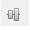

Publishing editor
The Publishing editor enables the user to define specifically which folders to publish to, and provides a graphical representation of the current publishing rules for the folder that is selected.
{kind=link}
The publishing editor consists:
Publishing editor toolbar with options designed to assist the user in defining the publishing rules.
Publishing Editor - displays, using coloured folders, what publishing rules are currently in existence for the source folder.
Source Folder - Outbound - any blue (direct) or green (hierarchical) folders displayed in the editor contain the contents published from this folder.
{kind=link}
Source Folder - Inbound - any blue (direct) or green (hierarchical) folders displayed in the editor have had their contents published to the source folder.
{kind=link}
Direct - the content of the source folder has been directly published to this folder.
{kind=link}
Hierarchical - the content of the source folder has been hierarchically published to this folder.
{kind=link}
{kind=link}
{kind=link}
Using the Publishing editor the contents of the source folder can be published directly to other folders or hierarchically to parent or child folders.
Publishing Inventory window- enables the user to see an inventory view of all publishing rules that have been carried out in the solution. The user can also see folders that have been moved to the Recycle Bin where a Recycle Bin icon, will be displayed next to the folder. The list will alter depending on whether Outbound or Inbound has been selected in the Publishing editor.
The Publishing editor toolbar is located across the top of the Publishing editor and is designed to assist the user in defining the publishing rules.
{kind=link}
Outbound - will display all folders that have content that has been published from the Source folder, see Outbound/inbound publishing examples
{kind=link}
Inbound - will display all the folders that have published their content to the Source folder, see Outbound/inbound publishing examples
{kind=link}
 Zoom in and Zoom out - select to enlarge or reduce the size of the image seen in the editor
Zoom in and Zoom out - select to enlarge or reduce the size of the image seen in the editor
Zoom To Fit - resizes the image to fit the editor the user has open
{kind=link}
Zoom Reset - resizes the image back to how it was displayed when the editor was first opened
{kind=link}

{kind=link}
Align Vertical - will align all objects vertical middle point for alignment
{kind=link}
 Display source and target(s) folders only - if outbound is selected, selecting this icon will display in the editor those folders that have content that has been published from the Source folder. If inbound is selected, selecting this icon will display all the folders that have published their content to the Source folder.
Display source and target(s) folders only - if outbound is selected, selecting this icon will display in the editor those folders that have content that has been published from the Source folder. If inbound is selected, selecting this icon will display all the folders that have published their content to the Source folder.
Check impact of current rule changes - ensures that the publishing rules that have been defined are valid
{kind=link}
 Remove all rules for current Source Folder - select to delete all the publishing rules that have been defined for the source folder that is currently selected
Remove all rules for current Source Folder - select to delete all the publishing rules that have been defined for the source folder that is currently selected